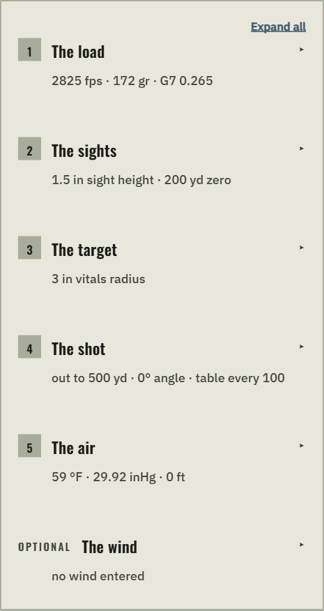
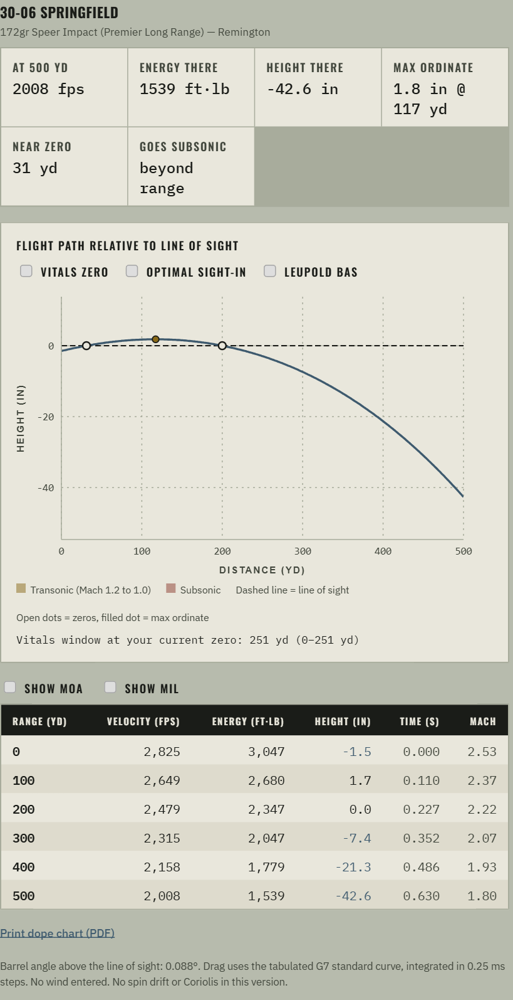
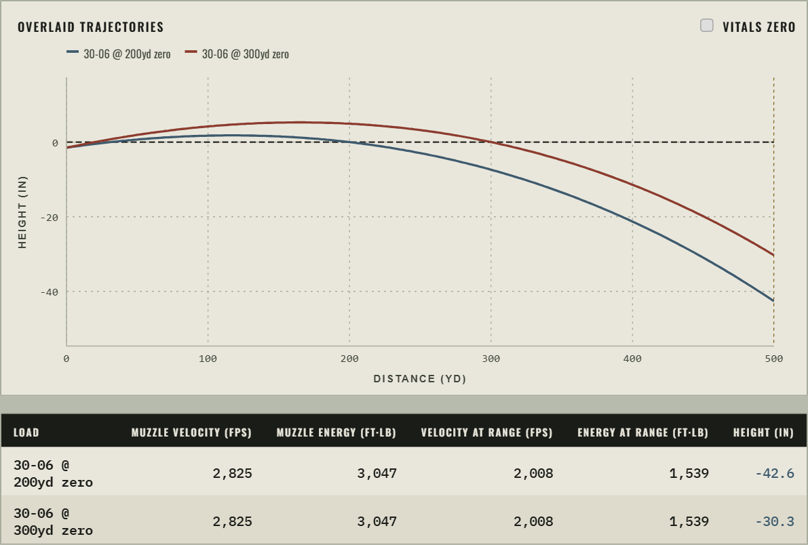
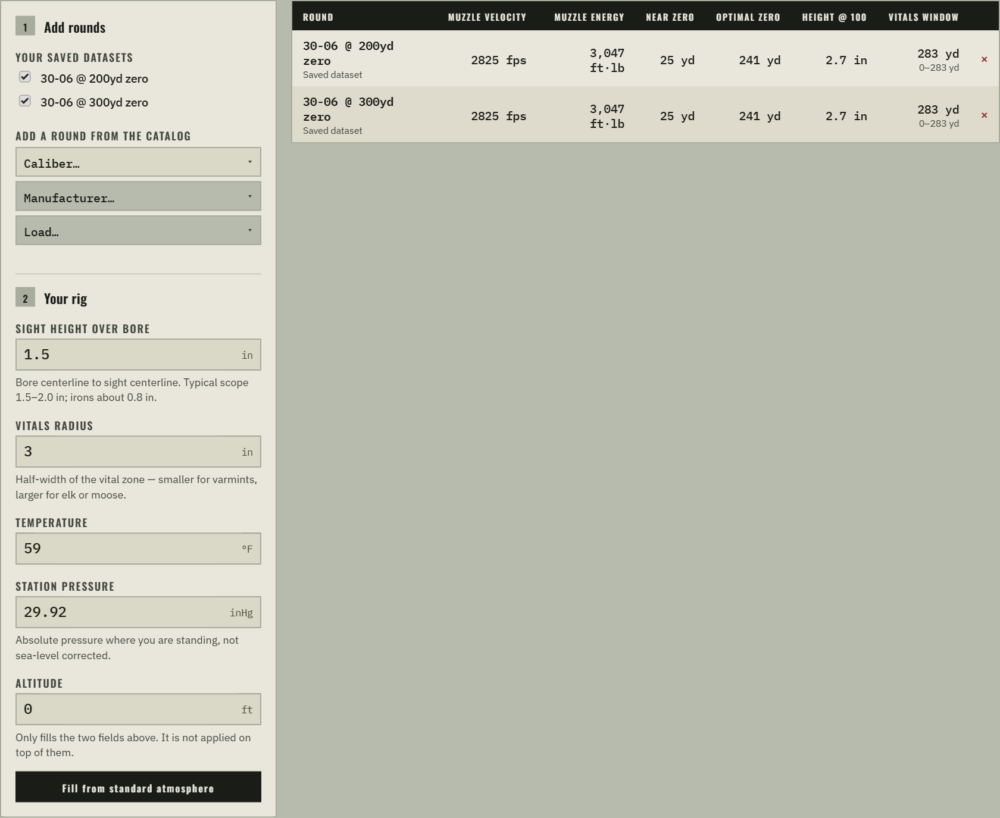
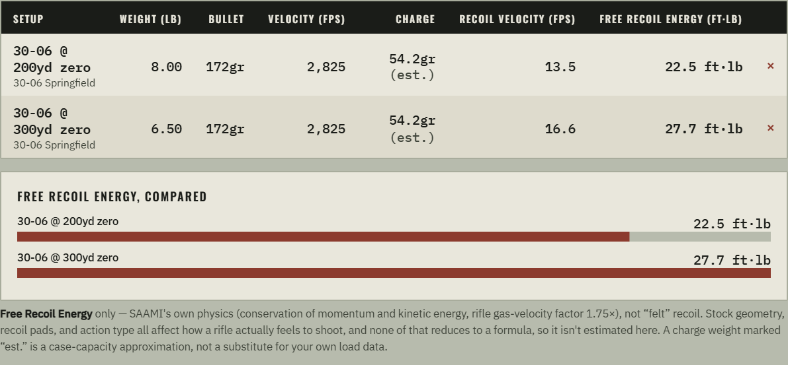

A free point-mass ballistics calculator: zero your rifle, chart the real drop, compare loads side by side, and find exactly how far you can hold dead-on. This guide walks the form, decodes the jargon, and flags the handful of places people get tripped up.
Open Ballistic Nerd →The Calculator tab walks the same order every time — pick a load, describe your rifle and target, tell it about the air, then read the chart. Four moves get you a real trajectory:
Use the caliber → manufacturer → load picker to pull real muzzle velocity, weight, and BC from the catalog — or type your own numbers for a handload.
Sight height over bore, zero range, and vitals radius describe your rifle and target — the catalog can't fill these in for you.
The summary strip and flight-path chart update live: velocity and energy at distance, where it goes subsonic, and how far you can hold dead-on.
One save reuses the whole setup in Compare and Optimal Zero — no retyping the same load twice.

One tab per question. Nothing here is sequential — jump straight to whichever answers what you actually walked in asking.
The main tool — one load, one full trajectory, zeroed at a distance you choose.
Overlays two or more saved loads on one chart and one table, so different rounds or rifles actually stack up against each other.
For a whole list of rounds at once, finds the zero that keeps you inside the vitals for the longest possible stretch.
Compares Free Recoil Energy across rifle-and-cartridge setups, straight from SAAMI's own published formula.
In-app how-tos, an FAQ, and a direct line to send an idea or report something wrong.
Real state pulled straight from the live app — not mockups.




Every chart in the app draws the same convention, so once you can read one you can read all of them.
The range table underneath lists velocity, energy, drop, and windage at every step distance you set. Turn on the MOA / MIL columns to get holdover in scope-click units instead of inches. Print dope chart opens your browser's print dialog with a clean printable card — pick "Save as PDF" as the destination to keep one in your range bag.
| BC | Ballistic coefficient — how well a bullet resists drag. Higher means it sheds velocity more slowly downrange. |
| G1 / G7 | Two different reference drag shapes a BC can be measured against. G1 fits older flat-base bullets; G7 fits modern boat-tails more accurately. A BC has to be paired with the model it was published under — mixing them isn't a small error, it's the wrong calculation. |
| Muzzle velocity | Bullet speed the instant it leaves the barrel, in fps (or m/s in Metric). |
| Sight height | Distance from bore centerline to scope (or iron sight) centerline — typically 1.5–2.0in for a scope, about 0.8in for irons. |
| Zero | The distance where your point of impact crosses your line of sight. A trajectory usually has two: a near zero (rising) and a far zero (falling back through). |
| Max ordinate | The highest point the bullet reaches above your line of sight — the top of the arc. |
| Vitals radius / window | Radius is the half-width of the vital zone you're trying to stay inside (smaller for varmints, bigger for elk or moose). The window is how far out you can hold dead-on and still land inside it, given your current zero. |
| Optimal zero | The zero distance that makes the vitals window as long as possible — the ballistics-nerd version of "how far can I just hold center." |
| MOA / MIL | Angular units scopes dial in. 1 MOA ≈ 1.047in per 100yd; 1 MIL = 3.6in per 100yd. Letting the table show holdover in these instead of raw inches matches what's printed on your turret. |
| Transonic / subsonic | Transonic is the messy zone around Mach 1.2–1.0, where drag behavior gets less predictable as the bullet slows through the sound barrier. Subsonic is everything past Mach 1.0. |
| Station pressure | The actual, un-adjusted air pressure where you're standing — not the sea-level-corrected number a weather report usually gives you. |
| Shot angle | Steep uphill or downhill shots carry less effective drop than the slant range suggests — this advisory line converts your slant distance to what it holds like on a flat shot (the "rifleman's rule"). |
| Free recoil energy | Exact physics — conservation of momentum and kinetic energy, from SAAMI's own published formula. Not the same as how a rifle feels to shoot, which also depends on stock, pad, and muzzle device. |
| Derived BC | A load's own manufacturer didn't publish a BC, so one was back-solved from that manufacturer's own published downrange velocity numbers. Grounded in real data, but an approximation — always labeled, never presented as an official figure. |
Every saved load and your shared rig live only in this browser's local storage. Nothing is uploaded anywhere. Convenient and completely private — but tied to this one browser on this one device.
An email + password account (confirm the email link to activate) syncs your saved loads and rig to the cloud, so the same setups follow you to another device or browser. Nothing beyond those two things is ever collected.
Because that's what you actually aim with and read on a reticle. The bullet starts one sight height below your line of sight, rises through it at the near zero, and falls back through it at the far zero — matching what you'd see at the range.
Yes — the Imperial/Metric toggle at the top applies everywhere. Everything is computed internally in imperial units and converted only for display and input, so switching back and forth never loses precision.
Manufacturers don't publish it for factory ammo. When a cartridge has known case capacity, the estimate comes from published case-capacity figures at a conservative ~90% load density — always labeled as an estimate, always overridable if you know your real charge weight.
No. It's exact physics — conservation of momentum and kinetic energy, straight from SAAMI's published formula. What a rifle actually feels like also depends on stock geometry, recoil pads, and muzzle devices, none of which reduce to one formula — so "felt" recoil is deliberately not estimated.
Spin drift, the Coriolis effect, aerodynamic jump, and powder-temperature sensitivity aren't in the solver yet. Everything currently implemented — drag, wind deflection, atmosphere — is a full point-mass integration, not a simplified approximation, and is checked against an independent solver: worst-case deviation is under 1 fps on velocity and 0.15in on height, out to 1000yd.
Clock face, relative to you: 12 is straight into your face, 3 is your right cheek, 6 is at your back, 9 is your left cheek. Leave wind speed blank for a no-wind trajectory.